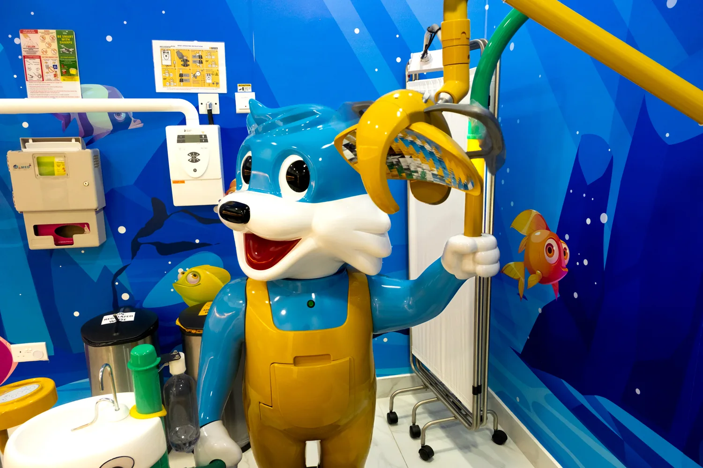
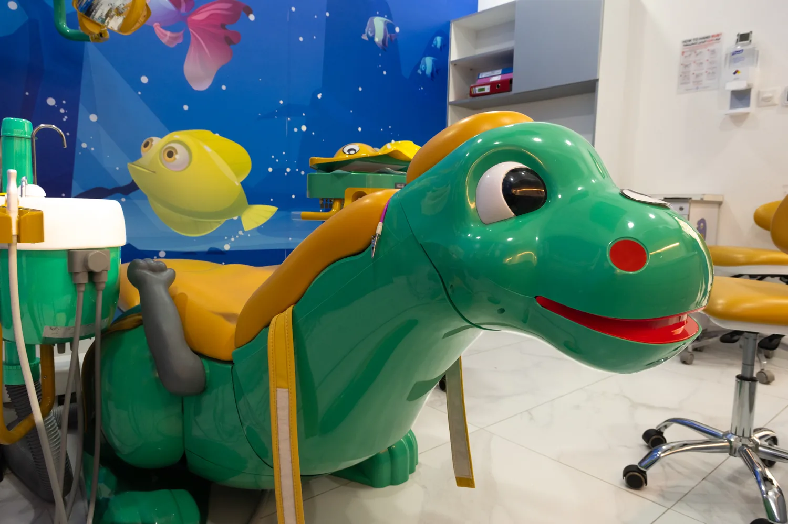
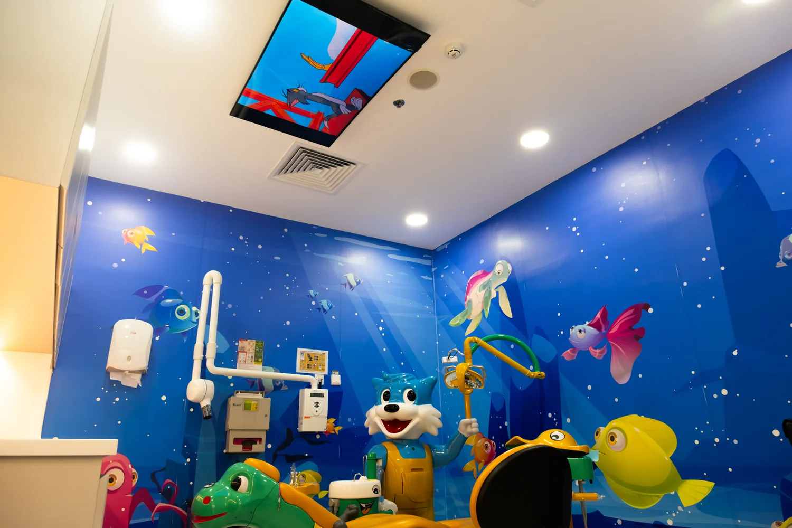

01
Nervous visits & extra support
For children who are anxious, fearful, need extra time or have additional healthcare needs.
Specialist Pediatric & Preventive Dentist with 11+ years of experience. First visits, nervous children, prevention, treatment, dental injuries and growing smiles.
I’ve spent more than 11 years in pediatric dentistry across India and the UAE. I especially enjoy helping nervous children, preventing problems early and making treatment feel less intimidating for families.
Some children are chatty. Some need time. Some need extra support. That’s normal.
More about me →You don’t need to know the dental term before you book. Tell me what’s going on and we’ll work out the next step.
For children who are anxious, fearful, need extra time or have additional healthcare needs.
First visits, prevention, cavities, fillings, pediatric crowns and pulp care.
Dental injuries, habits, space management and early orthodontic guidance as children grow.
What hurts, what worries them, and anything you think I should know.
Teeth, gums, growth and habits — calmly, without making it a big production.
You’ll know what I found, what the options are and what actually needs doing.
I’ll add approved clinical cases here as they’re ready. No stock teeth and no made-up transformations.

I currently see patients at several practices in the UAE. Choose a location or contact me if you’re not sure.
Come say hi.
Parent questions, quick tips and a little day-to-day pediatric dentistry.

Inside pediatric dentistry
Tips for parents